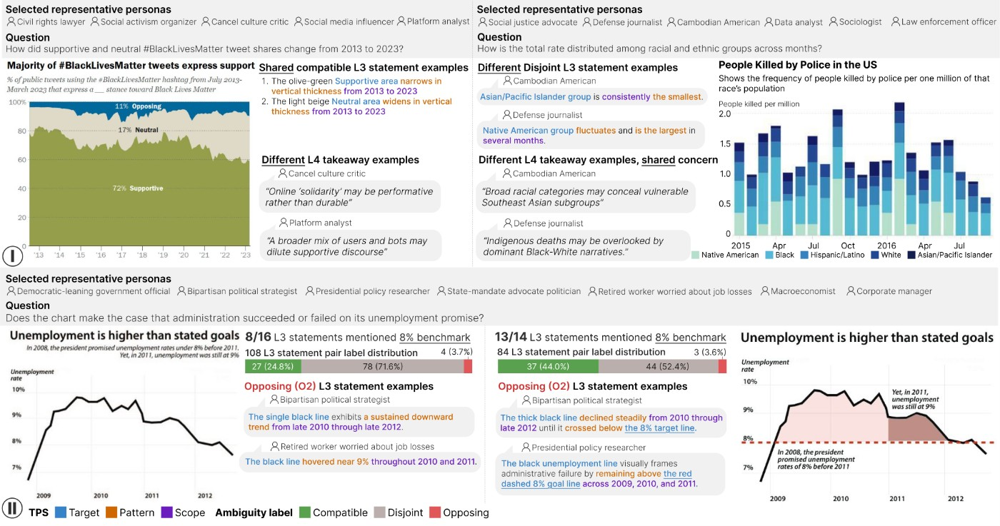

同一条线可以支持不同结论
图表中的数字没有错，读者仍可能得出作者没想到的结论。有人强调最低点之后的恢复，有人强调距离目标仍很远。研究把图表作为输入，先整理标题、轴、编码和可问的问题，再让与主题相关的模型角色回答同一道解释性问题。它想提供的是修改前可检查的一组读法，而不是让一个模型宣布图表好坏。对报告作者，具体用途是找到哪一段时间、哪一个群体或哪条参照线在不同解释中被遗漏，再决定是否调整表达。
Chart ambiguity profiles · 论文 · 研究原型

图表中的数字没有错，读者仍可能得出作者没想到的结论。有人强调最低点之后的恢复，有人强调距离目标仍很远。研究把图表作为输入，先整理标题、轴、编码和可问的问题，再让与主题相关的模型角色回答同一道解释性问题。它想提供的是修改前可检查的一组读法，而不是让一个模型宣布图表好坏。对报告作者，具体用途是找到哪一段时间、哪一个群体或哪条参照线在不同解释中被遗漏，再决定是否调整表达。
系统从PersonaHub检索相关角色并选择有差异的代表，按图型选择视觉语言模型。每个回答保留总体结论及图中支持它的模式描述，再拆成对象、模式、范围三部分。后续语言模型评审比较不同角色的句子，区分相容、各说不同但不冲突，以及直接矛盾或整体印象相反。这样作者能打开具体句子检查，而不是只看一个抽象分数。不过角色的嵌入距离不保证人口或思想差异覆盖，生成的解释也可能先读错图；角色数量不能当真实读者人数。
作者先用六百八十九个图表问题比较九个模型，再在一百一十五对人工标注句子上研究分类。四十对用于提示开发，七十五对用于策略评估；所选整体判断策略在后者达到百分之七十二一致。最终三模型评审组在全部一百一十五对上判对一百零一对，约百分之八十七点八；这不是一个全新的留出集成绩。研究还分析二十四张图。它没有单独验证对象模式范围拆解和细分类，也没有证明生成角色的意见分布等于真实人群理解分布。
一个失业率案例保持数据、角色与问题相同，加入基准线、阴影和调整后的注释，更多生成句子围绕相同基准解释；但强调恢复或强调长期未达标的分歧仍存在。这并不一定是坏设计，公共图表可能本来就支持多种合理解释。实际使用时应回看被判为冲突的原句与图中证据，再找目标受众确认哪处容易误解。为了让自动分数更整齐而删掉不利数据，会损害表达。当前方法更适合作为设计评审的提问助手，商业产品、收费和实际工作流节省尚未建立。